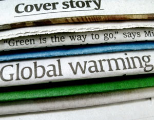

If you have questions about global warming, or are trying to keep up with the news on this issue, it can be a bit overwhelming. That’s because there’s a lot going on! Not only is new scientific research coming out all the time, but there’s a lot of political action now, too - including new climate legislation being considered in the United States and around the world in the wake of the United Nations climate summit in Copenhagen. It adds up to a barrage of news, information and opinions about global warming.
To help make sense of it all, we’ve put together this roundup of reliable resources for learning about climate change, including the causes, effects and possible solutions to this global problem. Whether you’re looking for answers to specific questions, or just trying to keep up with the latest news, here are a few interesting and useful resources to know about.
Obviously, not everyone agrees about the causes and effects of global warming. In addition to the climate skeptics who question that human-caused global warming even exists, there are also scientists who argue that the official statements on climate change are far too conservative and the actual impacts will be much worse than anticipated. However, there is information that a majority of climate scientists agree on.
To start with, the U.S. Environmental Protection Agency (EPA) has a brief and helpful summary that spells out what’s known, what’s very likely and what scientists are still unsure about. Here’s the EPA’s quick summary of the state of knowledge on climate change. This information is based on the 2007 report from the Intergovernmental Panel on Climate Change (IPCC), the world’s leading body for the scientific assessment of climate change. For more in-depth info, you can find the original IPCC report here, or check out the IPCC’s list of climate FAQ.
Climate change has different effects in different regions, and you may be wondering how it will affect your part of the world. For example, can your state or region expect to get less rainfall or more? How will that affect farms, gardens and wildlife in your area? Is your location threatened by sea level rise?
If you’re from the United States, you can find answers to many of these questions in a government report that came out in June 2009 called Global Climate Change Impacts in the United States. Here’s a link to the key findings, a link to the agriculture section of the report and a map where you can check out the regional impacts of climate change.
For information about other countries, if you do a quick search online you’re likely to find an official government website devoted to climate change. For example, here are links to climate change websites for Australia, Canada and India.
Global warming is a truly international problem. Here are a few places you can learn more about the effects of climate change around the world, and get different perspectives on potential problems and solutions.
It’s not hard to find news about what’s happening with the political issues related to climate change. Any mainstream media source should have this information, especially about pending legislation. But beyond the news media, here are two websites that are helpful for analyzing and understanding the issues.
To better understand what you personally can do to combat climate change, a good place to start is by calculating your carbon footprint. There are a lot of carbon calculators out there, but here are two good ones from the EPA. The Household Emissions Calculator is a simple questionnaire that finds how much energy you use at home and on the road, and offers suggestions for conserving. The EPA also has a Greenhouse Gas Equivalencies Calculator, which is interesting if you like statistics. This calculator helps you find facts such as how many pounds of carbon dioxide are emitted by burning 1 gallon of gas. (About 20.)
And finally, a word from MOTHER. Many of the strategies for combating global warming will sound familiar to Mother Earth News readers: conserving energy, tapping renewable energy and encouraging local food and organic farming. You can find more on all these topics on our website. Here are a few articles to get you started.
|
 ISTOCKPHOTO/LILLI DAY Global warming has been all over the news lately, and that doesn't seem likely to change anytime soon. Keeping up with the latest information can be a challenge. |
|
|